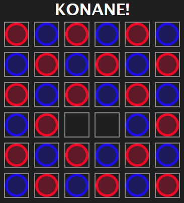
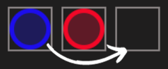
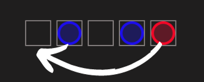

K¯onane é um jogo de tabuleiro e estratégia para dois jogadores. Ele é jogado em um tabuleiro retangular onde as peças dos jogadores são posicionadas de forma alternada, exceto duas posições centrais. Cada jogador será representado por uma cor e, alternadamente, move uma peça sua.
Uma peça pode ser movimentada desde que esteja adjacente (na horizontal ou vertical mas não na diagonal) a outra peça adversária e possa saltar por cima desta ficando na casa imediatamente a seguir (que tem de estar desocupada). A peça saltada é capturada e removida do tabuleiro (à semelhança das Damas). Isto significa que devem ocorrer capturas em todos os lances de uma partida de K¯onane.
Após uma captura, a peça movimentada pode, opcionalmente e se houver essa possibilidade, continuar a capturar peças adversárias desde que o faça no mesmo sentido (ou seja, não pode alterar a direção da captura no meio da jogada). Ganha o jogador que realizar a última jogada.
